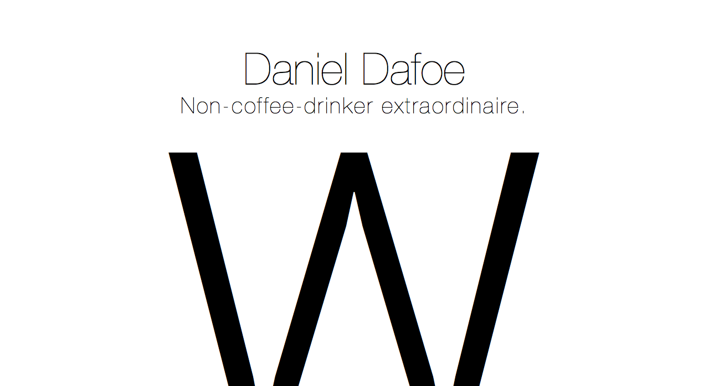
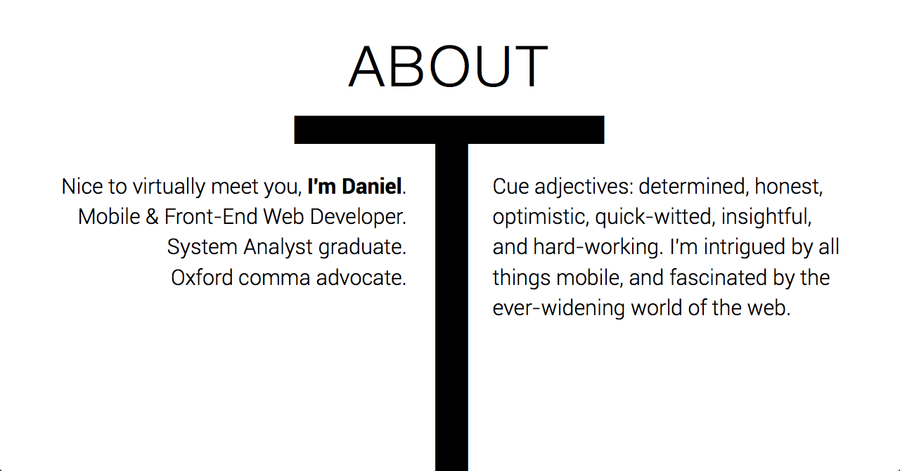
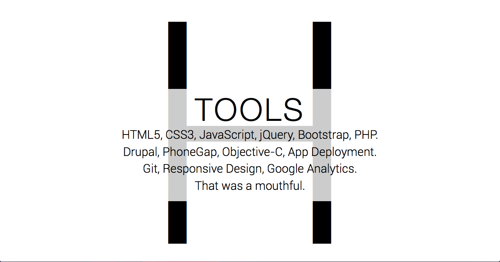
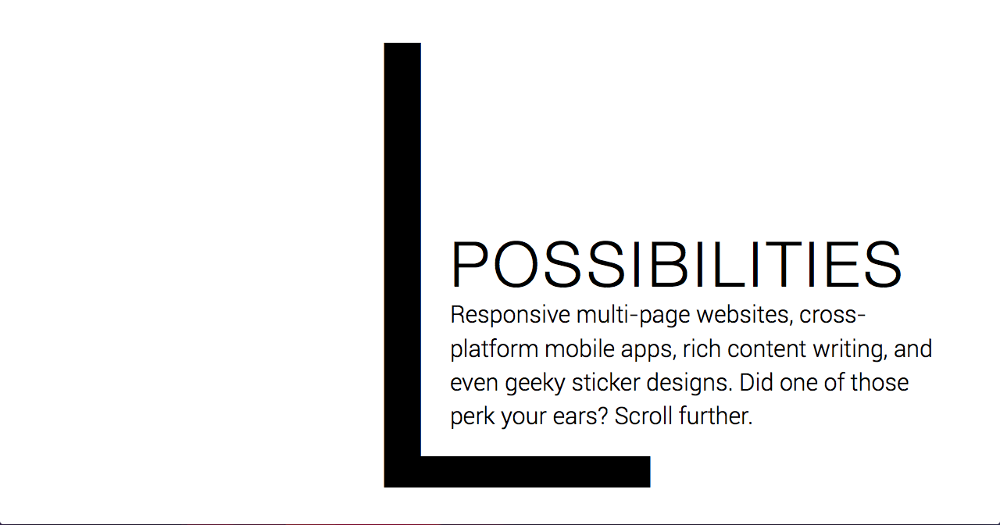
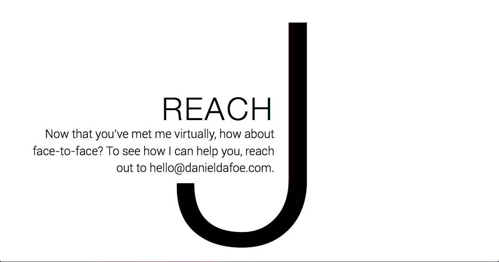

Typographic
Typographic Portfolio Idea
When one day I was reading a blog about "choosing the right typeface for your website", I had an intriguing thought. What if I could use typography as a form of design for a web page? It could separate sections of content, lead the user to the next section, and also look visually appealing.
Evidently, although it was not used as the final design for my portfolio, I considered it for its simplicity, uniqueness, and even the fact that it required no visual assets.

Rationale
Letters that were chosen were not done so by accident. I chose them based on their curvature, harsh edges, and even for their fit for the content. For instance, choosing an uppercase 'W' as the starting letter allowed me to have a letter that took up enough real estate to make good use of white space, and also because of the way it displayed my initial header and tagline.
By choosing the uppercase 'W', I am also able to give the idea that my name and tagline are hoisted up on some sort of pedestal. The long lines of the letter give off the idea (at least to me) that the words above it are sitting on an invisible table.
You may be asking yourself: "What's with the 'W'? Why not its reverse—the 'M'?" I would say to you that that was a simple design choice. If I had cut an 'M' at the fold, would it have formed two down arrows? This inclusion is not obvious at first, but I felt that it may subconsciously tell the user that there is more content below.
In order to better suit the minimalistic design, I needed to skim my content. By doing so I found that I really stripped away all of the unnecessary verbage and filler words. As a result I was able to keep the message concise and even be a little cheeky.


"What did you spell?"
As you can imagine, including letters sparked a lot of questions related to what word I was trying to spell or what the acronym I used stood for. While it may seem like an obvious choice to spell something related to my message with my chosen letters, this wasn't my focus.
Improvements
If I were to tackle this page again now that I have more experience with web development and design, I would select a better font family for the section titles—something more visually appealing. At the very least I would change the font-weight to match that of my name in the first section.
Aside from font I would spend more time making the portfolio responsive. The major drawback to using this type of design was the fact that it didn't translate well to smaller screens.

